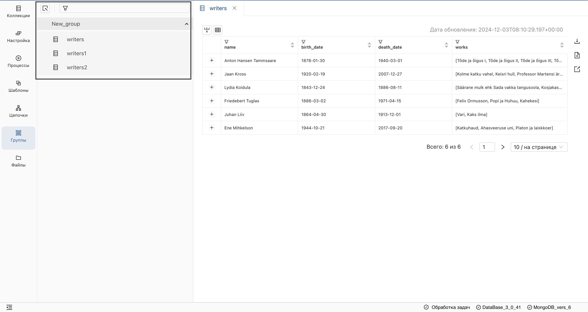
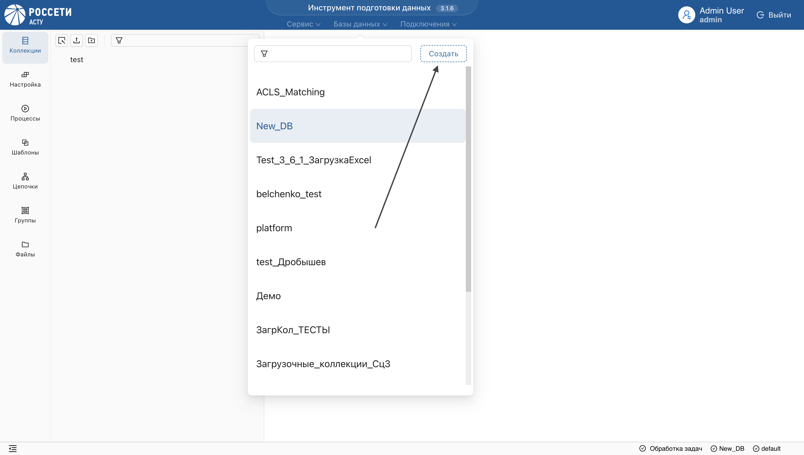
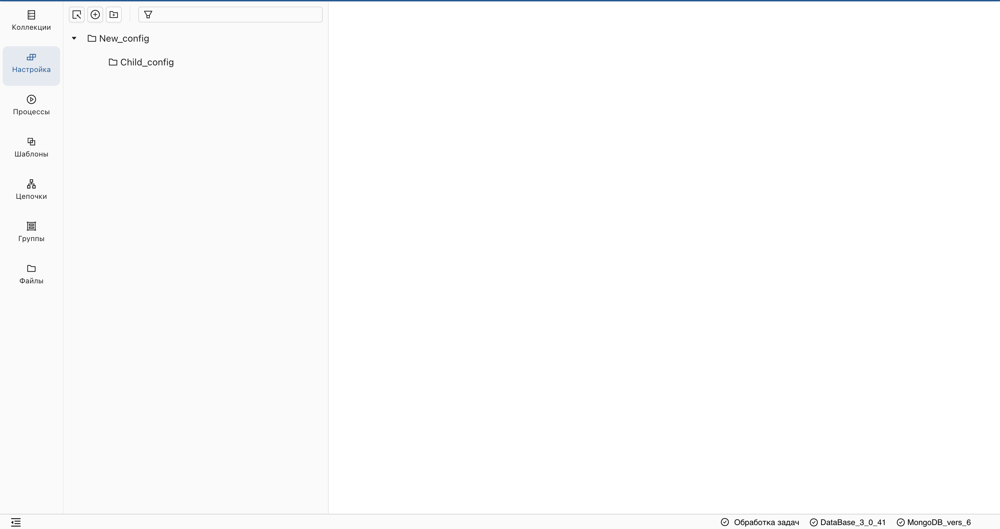
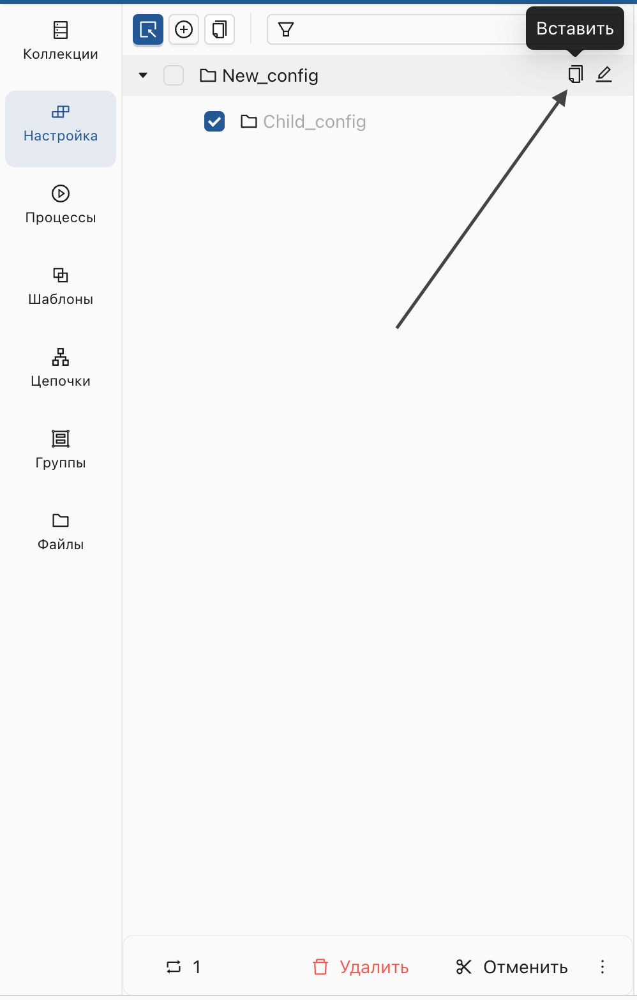
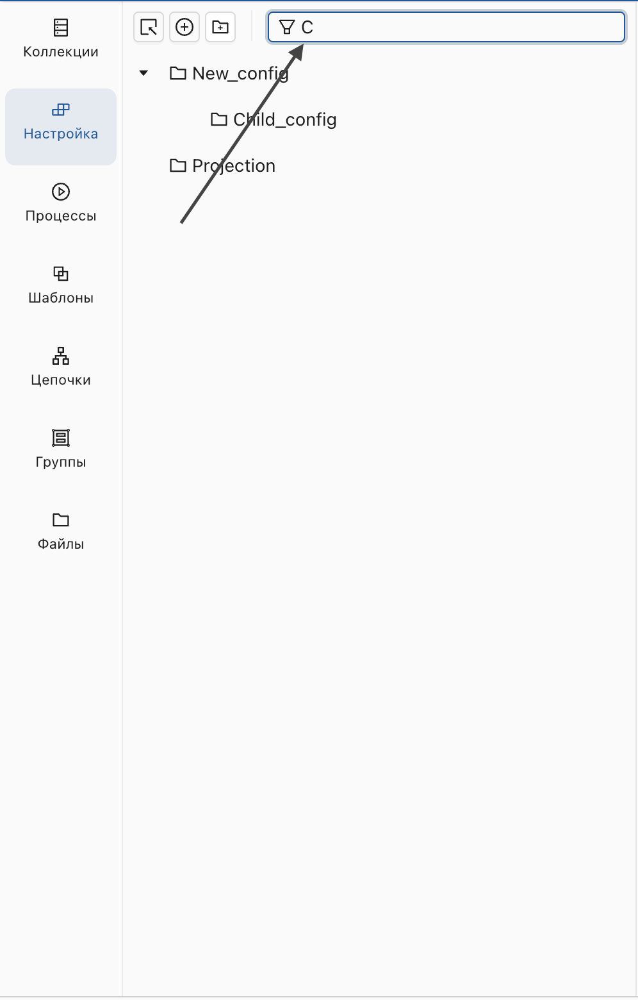

Функции, общие для всех разделов ("Коллекции", "Настройка", "Процессы", "Цепочки", "Шаблоны"), расположены в левом вертикальном меню и включают:
- Перенос артефактов между стендами.
- Отправку данных из одной БД в другую.
- Группировку объектов.
- Создание иерархической структуры.
- Удаление объектов.
Специфические функции, будут описаны в соответствующих разделах.
Перенос объектов между стендами
Сервис позволяет переносить пользовательские артефакты между стендами.
Для экспорта объектов:
- Выберите пользовательскую БД из списка и нажмите на "Сервис" в заголовке приложения.

- Выберите "Экспорт настроек".
- В открывшемся окне выберите необходимые объекты и подтвердите действие.
Результат:
Будет сформирован архив файлов.
При необходимости включите данные связанных коллекций, установив соответствующую галочку. Скачайте архив для дальнейшего импорта на другой стенд.
Для импорта объектов:
- Выберите "Импорт настроек".
- Загрузите архив файлов и подтвердите действие.
Для импорта доступны только файлы, экспортированные через данный сервис.
Отправка данных из одной БД в другую
- Перейдите в раздел, данные которого хотите отправить (например, "Коллекции").
- Включите режим массового выделения и выберите объекты.
- Наведите курсор на многоточие под списком и выберите "Переместить/Копировать".

- В открывшемся окне выберите Подключение и целевую БД.
Вы можете создать БД непосредственно в окне перемещения - для этого просто введите имя новой БД и подтвердите действие.

При экспорте настроек необходимо отправить коллекции-источники данных, иначе перемещенная настройка будет пустой.
Группировка объектов
Группировка позволяет создавать одноуровневые группы объектов в разделах: "Коллекции", "Настройка", "Процессы", "Цепочки", "Шаблоны". В отличие от иерархической структуры, один и тот же объект может быть добавлен в несколько групп одновременно.
- Перейдите в раздел, где находятся объекты, которые вы хотите добавить в группу.
- Включите режим массового выделения и выберите объекты.
- Наведите курсор на многоточие под списком объектов и выберите опцию "Группа".

- Выберите уже существующую группу или создайте новую, указав ее имя.
 Результат:
Результат:
Отмеченные объекты будут добавлены в указанную группу в разделе "Группы".

Вы можете добавлять в группу объекты различных сущностей, таких как Коллекции, Настройки и Процессы.
Удаление группы
- Перейдите в раздел "Группы" в левом меню.
- Выберите нужную группу и отметьте объекты, которые хотите удалить из нее.
- Нажмите кнопку "Убрать из группы".
 Результат:
Результат:
Объекты будут удалены из данной группы, но останутся в разделе, к которому они принадлежат.
При удалении объекта из основного раздела, он автоматически удалится из всех групп.
Группировка объектов в иерархической структуре
Иерархическая структура позволяет организовать объекты в разделах: "Коллекции", "Настройка", "Процессы", "Цепочки", "Шаблоны". В каждом разделе создается своя иерархия, где объекты могут располагаться как в корне, так и внутри папок. Папки и объекты сортируются по имени, и их имена должны быть уникальными в рамках раздела.
Создание папки
- Перейдите в один из разделов: "Коллекции", "Настройка", "Процессы", "Цепочки", "Шаблоны".
- На верхней панели инструментов нажмите кнопку "Создать папку".

- Введите имя папки и нажмите OK.
Результат:
Папка будет создана в корне раздела. Имя папки должно быть уникальным в рамках раздела.
Создание дочерней папки
- Найдите папку в дереве, в которую хотите добавить дочернюю папку.
- Нажмите на кнопку "Создать дочернюю папку" рядом с именем папки.

- Введите имя дочерней папки и нажмите OK.
Результат:
Дочерняя папка будет создана внутри выбранной папки.

Создание объекта в корне
Применимо для разделов "Настройка", "Шаблоны", "Цепочки".
- В разделе нажмите Добавить элемент на верхней панели инструментов.

- Введите имя объекта и нажмите OK.
Результат:
Объект будет создан в корне дерева и отображен в списке объектов. Имя объекта должно быть уникальным.
Создание объекта внутри папки
- Найдите папку, в которой хотите создать объект.
- Нажмите кнопку "Добавить элемент" рядом с папкой.

Результат:
Объект будет создан внутри выбранной папки.
Работа с массовым выделением
Массовое выделение позволяет одновременно выделить несколько объектов и папок для выполнения операций.
Включение режима массового выделения
Нажмите на элемент Массовое выделение на панели инструментов.
 Отметьте несколько объектов и папок.
Отметьте несколько объектов и папок.
Вырезание и вставка выделенных объектов
- Включите режим массового выделения и выберите объекты.
- Нажмите кнопку "Вырезать" на нижней панели инструментов.
 3. Найдите папку, куда нужно переместить объекты, и нажмите кнопку Вставить рядом с ее именем.
3. Найдите папку, куда нужно переместить объекты, и нажмите кнопку Вставить рядом с ее именем.
 Результат:
Выбранные объекты будут перемещены в указанную папку.
Поиск объектов и папок
- Введите имя объекта или папки в поле поиска на панели инструментов.
- Нажмите Enter.
 Результат:
Найденные объекты и папки будут отображаться в своем месте в иерархии.
Удаление объекта
Удаление объектов доступно для всех разделов, кроме Группы. 1. Включите режим массового выделения и выберите объекты. 2. Нажмите кнопку "Удалить".
 Результат:
Результат:
Выбранный объект будет удалён из списка.